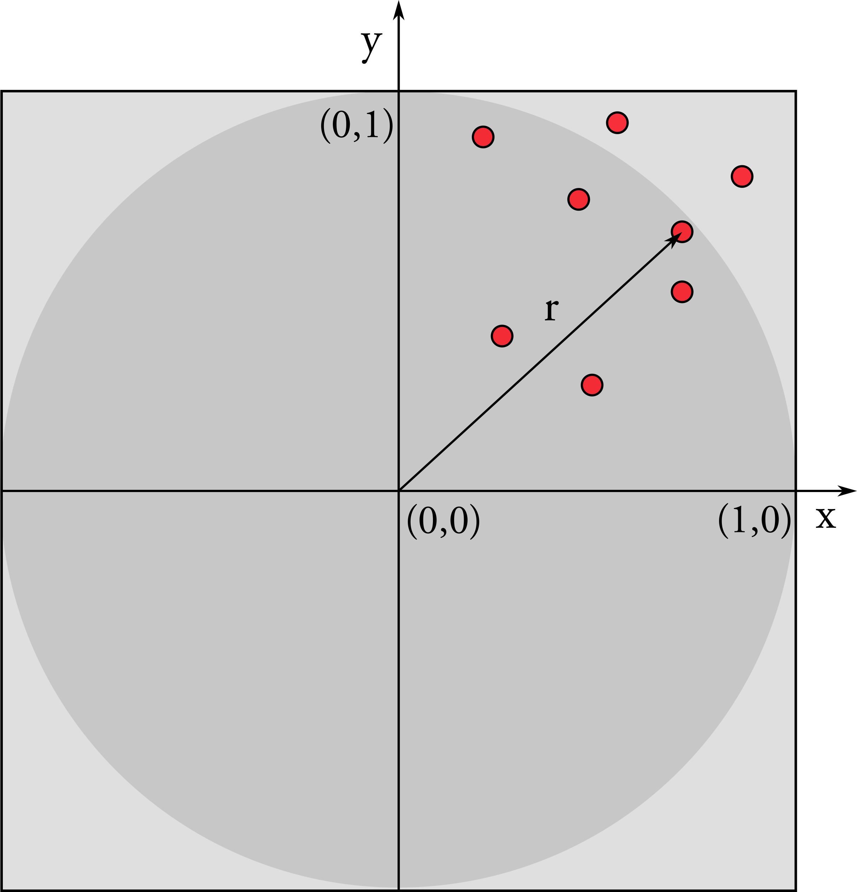

Parallel C++ and TBB
Environment
Make sure you are using the correct environment!
Hello World
#include <thread>
#include <iostream>
int main()
{
auto f = [](int i){
std::cout << "hello world from thread " << i << std::endl;
};
//Construct a thread which runs the function f
std::thread t0(f,0);
//and then destroy it by joining it
t0.join();
}
Compile with:
g++ std_threads.cpp -lpthread -o std_threads
Measuring time intervals
#include <chrono>
...
auto start = std::chrono::steady_clock::now();
foo();
auto stop = std::chrono::steady_clock::now();
std::chrono::duration<double> dur= stop - start;
std::cout << dur.count() << " seconds" << std::endl;
Exercise 1. Reduction
#include <iostream>
#include <random>
#include <utility>
#include <vector>
#include <chrono>
int main(){
const unsigned int numElements= 100000000;
std::vector<int> input;
input.reserve(numElements);
std::mt19937 engine;
std::uniform_int_distribution<> uniformDist(-5,5);
for ( unsigned int i=0 ; i< numElements ; ++i) input.emplace_back(uniformDist(engine));
long long int sum= 0;
auto f= [&](unsigned long long firstIndex, unsigned long long lastIndex){
for (auto it= firstIndex; it < lastIndex; ++it){
sum+= input[it];
}
};
auto start = std::chrono::system_clock::now();
f(0,numElements);
std::chrono::duration<double> dur= std::chrono::system_clock::now() - start;
std::cout << "Time spent in reduction: " << dur.count() << " seconds" << std::endl;
std::cout << "Sum result: " << sum << std::endl;
return 0;
}
Quickly create threads
unsigned int n = std::thread::hardware_concurrency();
std::vector<std::thread> v;
for (int i = 0; i < n; ++i) {
v.emplace_back(f,i);
}
for (auto& t : v) {
t.join();
}
Exercise 2. Numerical Integration
#include <iostream>
#include <iomanip>
#include <chrono>
int main()
{
double sum = 0.;
constexpr unsigned int num_steps = 1 << 22;
double pi = 0.0;
constexpr double step = 1.0/(double) num_steps;
auto start = std::chrono::system_clock::now();
for (int i=0; i< num_steps; i++){
auto x = (i+0.5)/num_steps;
sum = sum + 4.0/(1.0+x*x);
}
auto stop = std::chrono::system_clock::now();
std::chrono::duration<double> dur= stop - start;
std::cout << dur.count() << " seconds" << std::endl;
pi = step * sum;
std::cout << "result: " << std::setprecision (15) << pi << std::endl;
}
Exercise 3. pi with Montecarlo
.
The area of the circle is pi and the area of the square is 4.
Generate N random floats x and y between -1 and 1 https://en.cppreference.com/w/cpp/numeric/random/uniform_real_distribution.
Calculate the distance r of your point from the origin.
If r < 1: the point is inside the circle and increase Nin.
The ratio between Nin and N converges to the ratio between the areas.
Setting the environment for Intel oneTBB
Check your environment!
echo $TBBROOT
To compile and link:
g++ -O2 algo_par.cpp -ltbb
Let's check that you can compile a simple tbb program:
#include <cstdint>
#include <oneapi/tbb.h>
#include <oneapi/tbb/info.h>
#include <oneapi/tbb/parallel_for.h>
#include <oneapi/tbb/task_arena.h>
#include <cassert>
int main() {
// Get the default number of threads
int num_threads = oneapi::tbb::info::default_concurrency();
// Run the default parallelism
oneapi::tbb::parallel_for(
oneapi::tbb::blocked_range<size_t>(0, 20),
[=](const oneapi::tbb::blocked_range<size_t> &r) {
// Assert the maximum number of threads
assert(num_threads == oneapi::tbb::this_task_arena::max_concurrency());
});
// Create the default task_arena
oneapi::tbb::task_arena arena;
arena.execute([=] {
oneapi::tbb::parallel_for(
oneapi::tbb::blocked_range<size_t>(0, 20),
[=](const oneapi::tbb::blocked_range<size_t> &r) {
// Assert the maximum number of threads
assert(num_threads ==
oneapi::tbb::this_task_arena::max_concurrency());
});
});
return 0;
}
Compile with:
g++ your_first_tbb_program.cpp -ltbb
Your TBB Thread pool
// analogous to hardware_concurrency, number of hw threads:
int num_threads = oneapi::tbb::info::default_concurrency();
// or if you wish to force a number of threads:
auto t = 10; //running with 10 threads
oneapi::tbb::task_arena arena(t);
// And query an arena for the number of threads used:
auto max = oneapi::tbb::this_task_arena::max_concurrency();
// Limit the number of threads to two for all oneTBB parallel interfaces
oneapi::tbb::global_control global_limit(oneapi::tbb::global_control::max_allowed_parallelism, 2);
Task parallelism
A task is submitted to a task_group as in the following.
The run method is asynchronous. In order to be sure that the task has completed, the wait method has to be launched.
Alternatively, the run_and_wait method can be used.
#include <iostream>
#include <oneapi/tbb.h>
#include <oneapi/tbb/task_group.h>
using namespace oneapi::tbb;
int Fib(int n) {
if (n < 2) {
return n;
} else {
int x, y;
task_group g;
g.run([&] { x = Fib(n - 1); }); // spawn a task
g.run([&] { y = Fib(n - 2); }); // spawn another task
g.wait(); // wait for both tasks to complete
return x + y;
}
}
int main() {
std::cout << Fib(32) << std::endl;
return 0;
}
Bonus: Graph Traversal
Generate a direct acyclic graph represented as a std::vector<Vertex> graph of 20 vertices:
struct Vertex {
int N;
std::vector<int> Neighbors;
}
If there is a connection from A to B, the index of the element B in graph needs to be pushed into A.Neighbors.
Make sure that from the first element of graph you can visit the entire graph.
Once generated, when you visit a vertex X of the graph, you compute Fib(X.N). Generate Vertex.N uniformly between 30 and 40.
Remember to keep track of which vertex has already been visited.